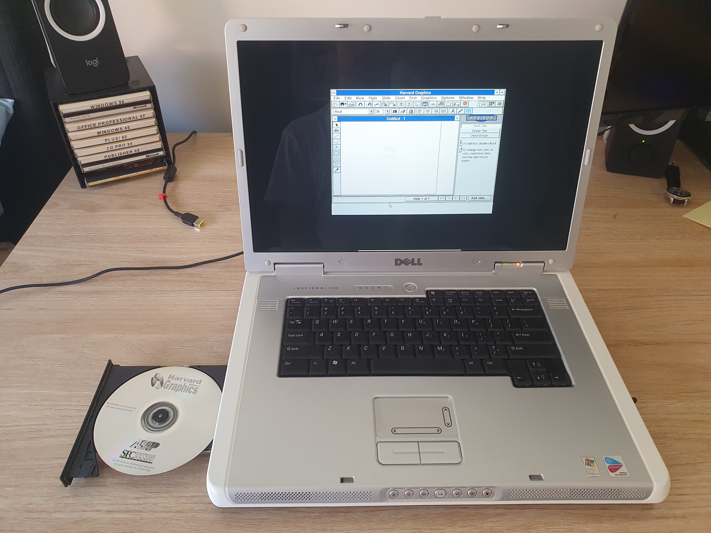

Harvard Graphics was a predecessor to Microsoft PowerPoint in business presentation software originally released in 1986. I received a copy of the software on an old CD as part of a collection of late 90's and early 2000's software. What really stood out to me about this program over the others was that it was listed to run on Windows v3.0.
To be able to run Harvard Graphics at all, I needed a way to run Windows v3.0. As I had been using an old Windows XP machine to test some of the other programs (as it was the only capable machine with a disk drive) I decided that I would also use this machine to try and run Windows v3.0 on, in a virtualised environment.
This was of greater difficulty than I had first thought because despite my previous experience with virtual machines, finding virtual machine software that would work on 20 year old hardware was quite challenging. Eventually I was able to find a version of Virtual Box that did run on Windows XP without issue.
After some research online I discovered that to install Windows v3.0 I would first have to install MS-DOS. After some trial and error in finding a correct version with all of the required files, I was able to transfer all of the disk image files needed via USB from my main laptop to the Windows XP machine.
Following a YouTube video, the installation of MS-DOS was not difficult, aside from ensuring that the correct "floppy disk" was "inserted" and then "removed" at the correct times to ensure the installation completed successfully. I next had to install Windows through the MS-DOS command prompt.
Again following a YouTube video, I found the (seemingly) correct version of Windows and all the files necessary for the installation, copied them onto my USB and then onto the Windows XP machine. However I was not able to mount the files required for the Windows installation into the virtual disk drive of the MS-DOS machine as I did not have the correct CD-ROM driver installed.
Through an extended period of trial and error I attempted to find the correct version of the CD-ROM driver, and in doing so was thankful that this could all be completed through the internet in a matter of hours, as opposed to the possible days it might have taken to find the correct media in physical form when this software was released.
Moving back to the YouTube video, I was now able to correctly mount all of the files for the Windows v3.0 installation and then complete the setup process, which was not to dissimilar than that of the MS-DOS installation.
Upon inserting the Harvard Graphics disk image (I had copied it off of the disk as I believed there might be some trouble virtualising the physical disk tray, which in fact there was not) into the virtual machine and running the SETUP executable for the installation of the program, I received an error message stating that the program only worked for Windows v3.0.
As it turns out the whole time I had thought I had been installing Windows v3.0 I had actually been installing Windows v3.1 which did not work with the copy of Harvard Graphics that I had.
Possibly an hour or so later after re-installing MS-DOS into another virtual machine (I realise now this may not have been necessary) with the additional CD-ROM driver, finding the correct Windows v3.0 files, copying them to the Windows XP host, mounting them into the MS-DOS machine, and running through the Windows installation once again, I finally had the correct environment needed to run Harvard Graphics.
I mounted the disk image into the virtual machine, opened the file manager, found the SETUP executable, ran it, and not long later, it was there. Harvard Graphics, released in 1993, running on an operating system from 1990 (on top of a shell from 1981), within a virtual environment released in 2010, on a host operating system released in 2001, on a laptop released in 2005, all of which functioned correctly and cohesively in 2026.
